The komorebi project
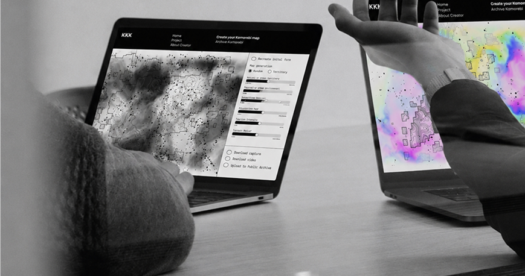
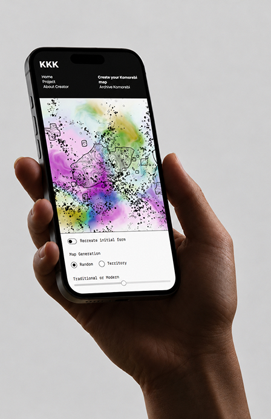
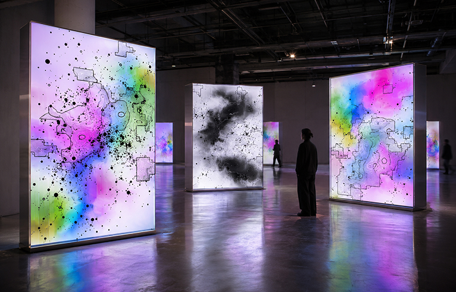
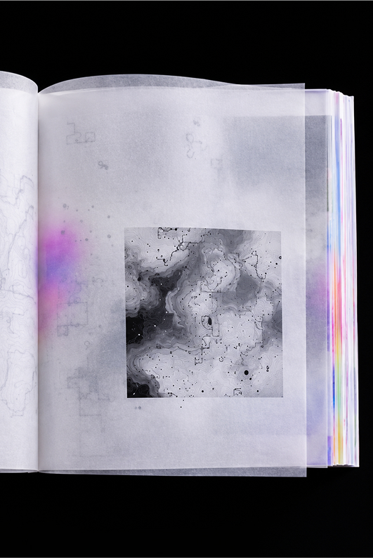
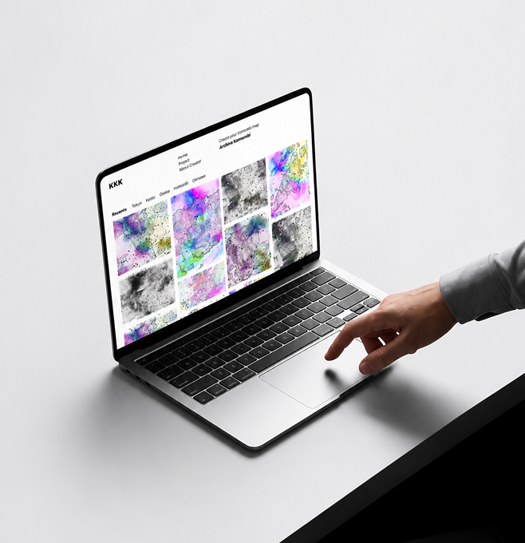
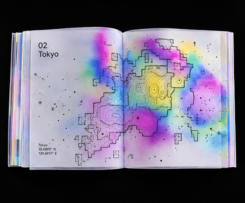
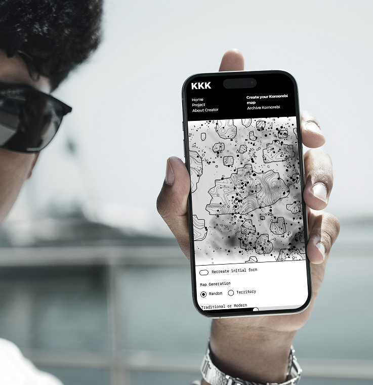
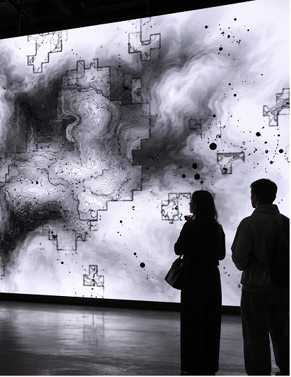
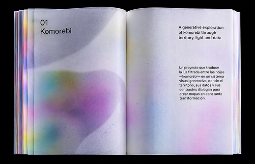
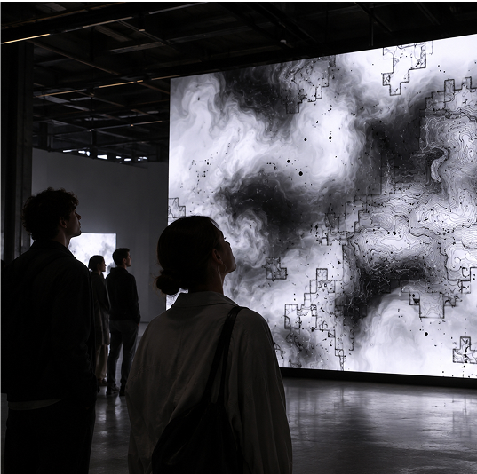
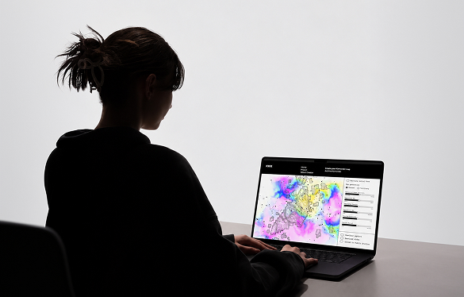
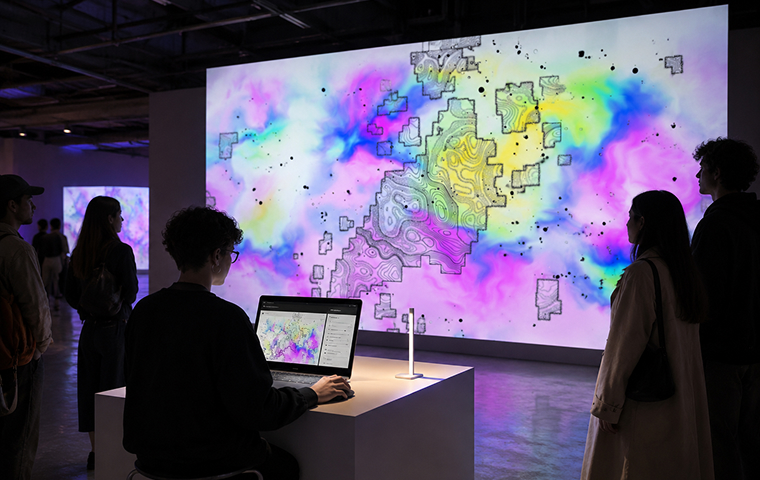
Cultural Perceptions and Collective Imagination
Our perception of different countries and cultures is often shaped by stereotypes, media representations and shared cultural references rather than direct experience. These influences contribute to the construction of a collective imagination, a system of shared ideas through which we interpret unfamiliar places. While collective imagination includes cultural associations, stereotypes simplify these ideas into fixed and generalized representations that rarely capture the complexity of reality.
Every territory has its own historical, social and cultural identity, constantly evolving through traditions, generational changes and contemporary influences. However, the images associated with a country often overlook its internal diversity, creating a distance between how a place is imagined and how it is actually experienced. Recognizing this difference is essential to developing a more critical and nuanced understanding of cultural identities.
KOMOREBI explores this relationship through an interactive and generative experience inspired by Japan. Users create imaginary territories by adjusting geographical, demographic and sociocultural parameters, transforming their preconceived ideas into unique visual compositions. Through a playful and educational approach, the project encourages users to question how their perceptions are constructed and how these interpretations may differ from the realities of existing territories.
Rather than rejecting collective imagination, KOMOREBI uses it as a creative opportunity to experiment and reinterpret familiar cultural references. Through a shared public archive, individual creations form a collective visual landscape that reveals different ways of imagining places. Ultimately, the project connects creativity, interaction and cultural reflection, encouraging users to look beyond stereotypes while celebrating the possibilities of imaginary worlds.
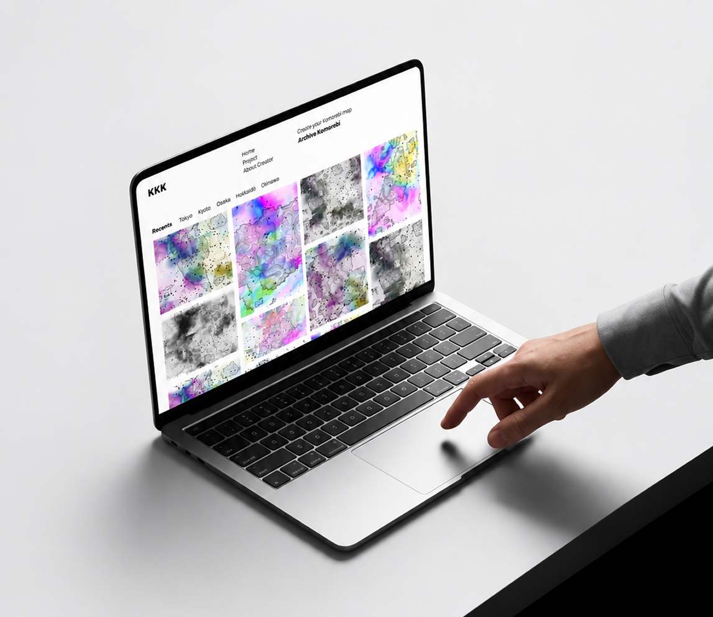
Live Installation and the Komorebi Archive
The live installation of Komorebi extends the digital experience into a physical environment, transforming generative map-making into a collective, immersive, and interactive process. Through a computer connected to a large-scale projection, visitors can explore the system by adjusting different parameters and observing how their choices influence the visual composition in real time. Each interaction generates a unique representation, combining cartographic structures, fluid colors, and evolving patterns inspired by the relationship between light, nature, and territory. By bringing the project into a shared space, the installation encourages active participation and collective reflection on how cultural, geographical, and environmental factors shape our perception of a place. The resulting compositions become temporary visual interpretations, constantly changing through the interaction between the audience and the generative system. This continuous transformation highlights the relationship between individual perception and collective experience, turning the installation into a living visual archive shaped by its participants and their unique creative interactions.
Complementing the live installation, Komorebi Archive is an experimental editorial publication that documents the project's research, conceptual development, creative process, and visual experimentation. Conceived as a physical extension of the digital experience, the book explores the relationship between materiality, perception, and cultural interpretation through the use of lightweight, translucent paper. Its pages allow images, texts, and generative cartographies to overlap, creating compositions that continuously change as the reader moves through the publication. This layering becomes a visual metaphor for the cultural filters through which we observe and interpret a territory, suggesting that our understanding of a place is never completely neutral, but shaped by multiple perspectives and layers of information. Through transparency, light, and superposition, the publication translates the conceptual foundations of Komorebi into a tactile experience, where the act of turning each page reveals, conceals, and transforms the visual narrative, encouraging deeper reflection on cultural perception.
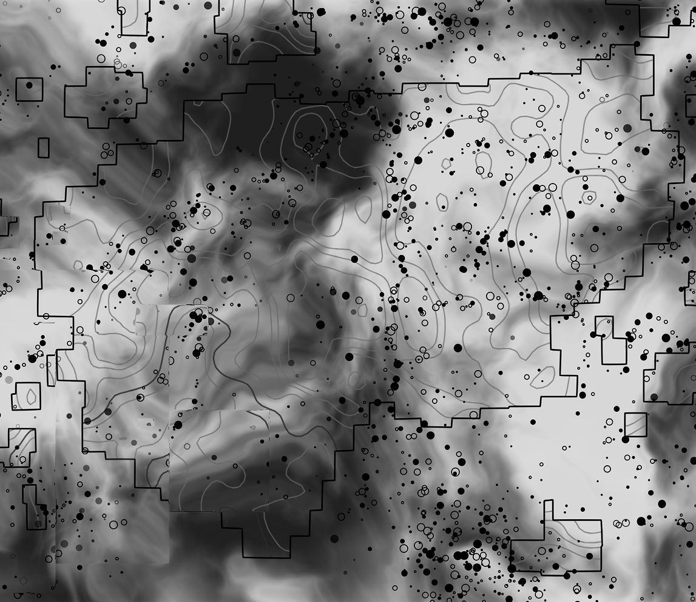
About creator
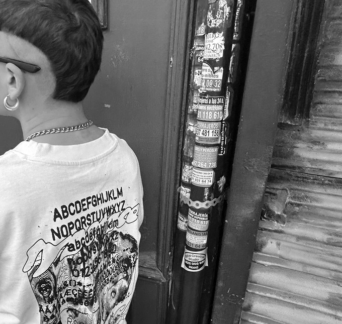
Celia Pons Rico is a graphic designer based in Madrid, Spain, with a particular interest in generative design, field research, and the exploration of visual communication as a means of expressing complex concepts and meaningful ideas. Her creative practice focuses on establishing connections between visual experimentation, conceptual thinking, and contemporary cultural and social contexts. Through an interdisciplinary approach, she explores how graphic design can move beyond its traditional communicative and aesthetic functions to become a tool for investigation and critical reflection.
Her work is driven by the belief that design should extend beyond visual appeal, seeking to develop projects grounded in research, experimentation, and conceptual depth. Rather than approaching aesthetics as an isolated objective, she considers visual language an essential medium through which ideas, narratives, and perspectives can be explored and communicated. By combining emerging technologies, experimental methodologies, and research-based processes, she aims to challenge conventional approaches to graphic design and create experiences that encourage interaction, questioning, and a deeper understanding of the subjects they address.